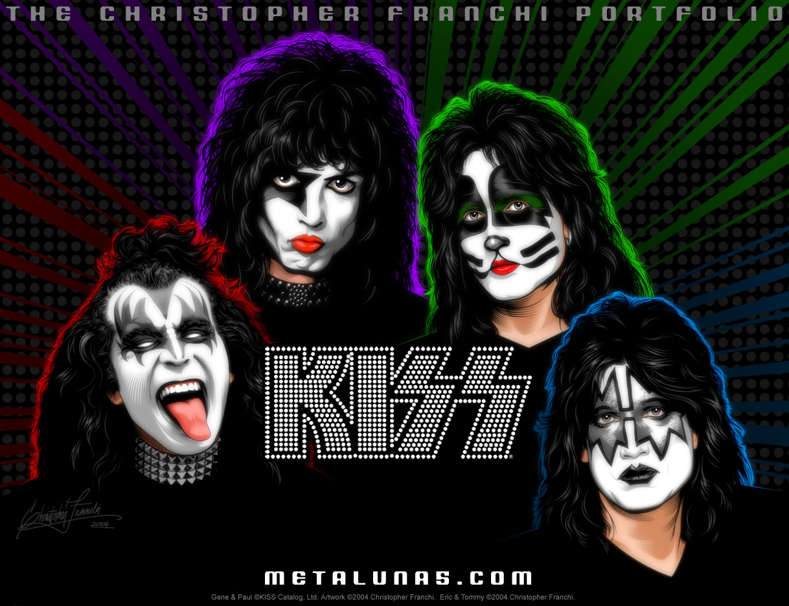

Biographie : Iron Maiden

Kiss est un groupe de métal américain formé à New York en janvier 19731 par le guitariste Paul Stanley (de son vrai nom
Stanley Harvey Eisen, né en 1952) et le bassiste Gene Simmons (Chaim Witz, né en 1949). Très populaire à travers le
monde, notamment grâce à leurs maquillages, leurs costumes extravagants, leurs nombreux effets spéciaux sur scène et la
célèbre très grande langue de Gene Simmons, Kiss a vendu plus de 19 millions d'albums aux États-Unis2 et plus de 100
millions à l'échelle mondiale3. Les enregistrements du groupe et de ses membres en solo leur ont permis de récolter 24
disques d'or, 9 disques de platine et 10 disques multi-platine pour les seuls États-Unis4,5. On reconnaît aussi souvent
Kiss pour leurs 2 500 produits dérivés qui se vendent en quantité industrielle, si bien que la « marque » Kiss a été
évaluée à 1 milliard de dollars américains.
Kiss est considéré comme l'un des plus grands groupes de hard rock et également comme le précurseur du glam metal, un
genre très populaire durant les années 1980.
La formation avec Paul Stanley (chants et guitare rythmique), Gene Simmons (chants et guitare basse), Ace Frehley
(guitare solo et chants), et Peter Criss (batterie, percussions et chants) est celle la plus identifiable et ayant eu le
plus de succès. Avec leurs maquillages et leurs costumes, ils prirent un style de personnages de comics : le démon
(Simmons), l'enfant étoile (Stanley), l'homme de l'espace (Frehley), et l'homme chat (Criss). Le groupe explique que ce
sont les fans qui ont choisi les modèles finaux des maquillages. À cause de différences musicales, Criss et Frehley ne
faisaient plus parties du groupe en 1982. La fortune commerciale du groupe avait également considérablement diminué.
En 1983, Kiss abandonna son maquillage et profita d'un retour au succès commercial qui dura le reste de la décennie.
Suite au fait qu'une partie des fans du milieu des années 1990 étaient nostalgique de la première formation de Kiss, le
groupe annonça une réunion avec la formation originale du groupe avec maquillages et costumes d'époque en 1996. Les
tournées en résultant, Alive/Worldwide/Lost Cities/Reunion, furent les tournées les plus lucratives de 1996 et 1997.
Criss et Frehley ont depuis quitté le groupe de nouveau et ont été remplacés respectivement par Eric Singer et Tommy
Thayer. Le groupe continue de jouer avec son maquillage, bien qu'il ne reste que Stanley et Simmons de la première
période maquillage.
Kiss fut nommé par VH1 10e sur leur liste des 100 meilleurs artistes de hard rock7 et 9e dans la liste des meilleurs
groupes de metal de MTV8. Le 23 septembre 2009, Kiss fut nommé au Rock and Roll Hall of Fame9, mais le 15 décembre 2009
il fut annoncé que Kiss ne serait finalement pas introduit10.
En 2009, Kiss a sorti son premier album studio depuis 1998, Sonic Boom. L'album s'est hissé à la 2e place des palmarès
américains et à la première place des classements Rock albums, Hard rock albums et Independant albums, le plus haut dans
toute l'histoire du groupe, et le single Modern Day Delilah à la 11e place.